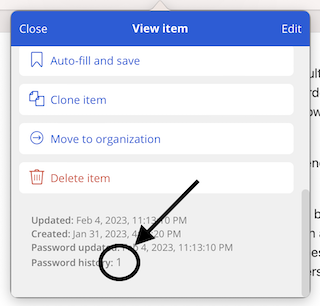

In which LastPass gifts us a Sisyphean task
With recent news of LastPass having a significant security breach and also handling the public response poorly, there’s been calls to ditch LastPass.
From LastPass’ blog post:
The threat actor was also able to copy a backup of customer vault data from the encrypted storage container
This is encouragement to migrate. Bitwarden and 1Password seem like reasonable alternatives, at least for now, until fate comes for them as well.
Because the LastPass breach creates a threat that customer password vaults were copied, it means that any migration isn’t complete without changing passwords.
All of them. A boulder suddenly appears.
I have more than 200 entries in my password vault and rotating every single one is going to be a huge, boring chore. The tools don’t help, either, as far as I can tell. Bitwarden, for example, doesn’t have an easy way for a normal human to do this password change task. Every website has their own unique and often terrible password change process, and Bitwarden is happy to add even more steps.
Most password change workflows, in my experience, ask you for your current password and your desired new password at the same time.
In Bitwarden, changing a password is fairly easy, but it’s not obvious how to find the old one. I can edit a vault entry and click the “🔄 Generate Password” button, but as soon as that process is done, the old password is put into the password history which is kind of hidden behind small text that doesn’t even look like something I can click on, and to even see this small inconspicuous text, you have to scroll down in what looks like a small popup window with minimal indication that it can even be scrolled. I’d love to see a kind of password change workflow in password managers where both the old and new password are available at the same time without hassle.

What does this password change process look like with Bitwarden?
Steps:
- Choose a vault entry and visit the site
- Login
- Find the password change feature on the site (good luck!)
- Open the vault again
- Edit the entry for the current site
- Click 🔄 to generate a new password
- Save
- Scroll to the bottom of the vault entry to find, in small font, “Password history” and click the number (probably
1). - Copy the old password
- Paste into “old password” field on the site
- Go back into the vault, copy the new password
- Paste it again, probably twice, into the site
- Finish!
This is too many steps, and it’s needed each time for every entry in the vault. I want to scream.
Doing this on mobile is even worse because switching back and forth between apps makes this process way slower. It’s extremely reasonable to expect that very few people will even attempt to change all of their passwords.
This whole process is made even more difficult because I can’t find any way to ask the Bitwarden mobile or desktop apps for help doing this – even just giving me a list of passwords I haven’t changed recently would help, but there’s no “sort” in the vault. I’d love to sort by something contextual and intelligent like risk or impact – like show me financial logins and major communication tools first, etc. I have to settle for sorting things by the last time they were changed, which, again, the Bitwarden mobile and desktop apps do not help with.
Fortunately, there’s a command-line tool for Bitwarden that prints JSON, and I can use that. The following shell command will sort vault entries by “revisionDate”, oldest first.
bw list items | jq -r '. | sort_by(.revisionDate) | .[] | "\(.name) - \(.revisionDate)"'
This will output the site name and the revision date.
If I can find the energy, maybe I can do 5 to 10 of these per day? I don’t know. Pipe this output to | head -n 5 to give 5 sites that need changing.
I am certain, however, with the current trend of public information security posture among large corporations, that if I don’t go through this boring, solitary, and extremely tedious task, then whatever negative happens afterwards must be surely my fault.
This boulder isn’t going to push itself.